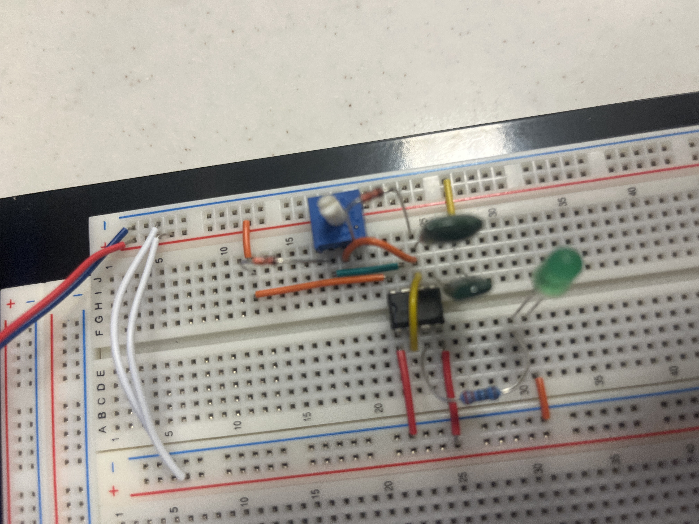

Key Visuals


Full LTSpice schematics and simulations are included in the report below.
Developed and tested a PWM LED using a 555-Timer integrated circuit. This circuit uses a potentiometer and a modified astable 555-timer configuration to control the brightness of LEDs. Also tested configuations of monostable and astable modes to ensure proper behavior of the IC.
Full LTSpice schematics and simulations are included in the report below.